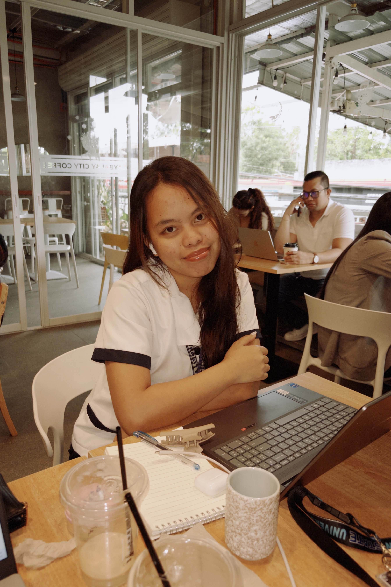
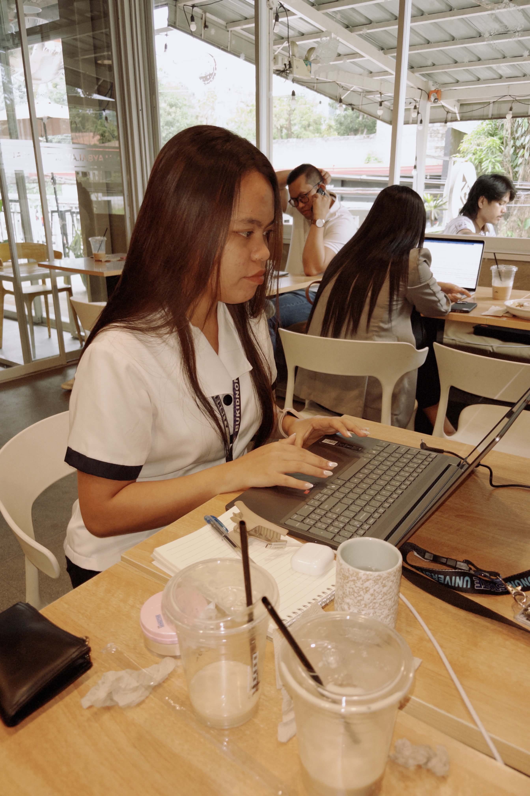
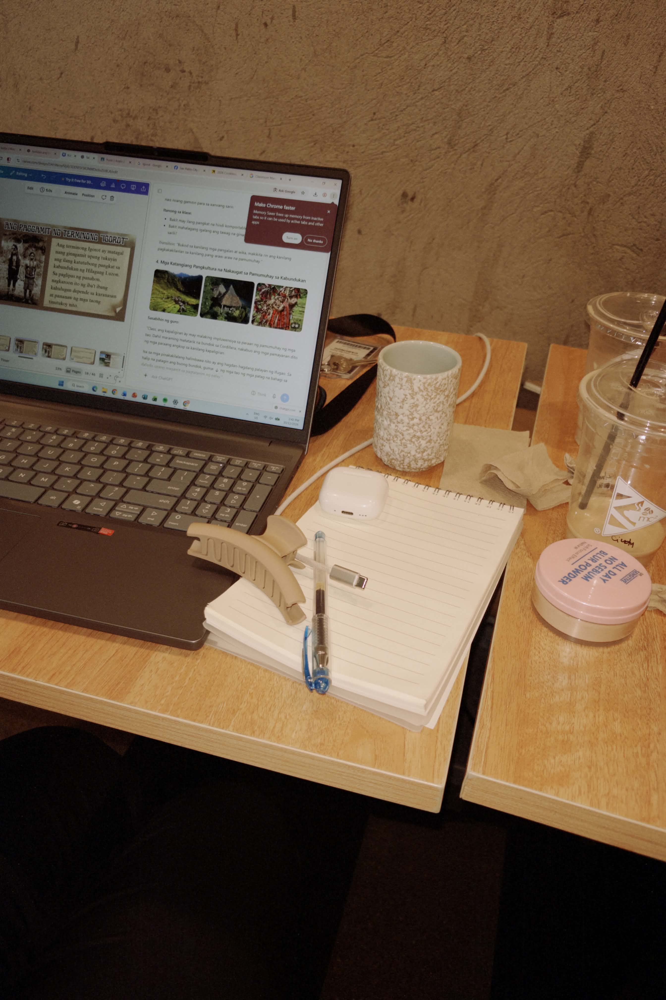

ISED 2 · Seminar in Professional Education
My Learning
Journey.
An e-portfolio on test-taking strategies, academic progress, and reflection as I prepare for the teaching profession.
with purpose
educator
01 / the person behind the work
About me
The aspiring educator behind this journey.
A note from me
Who I am
I am Cindy Pearl E. Gonzaga, an aspiring Social Studies teacher with a heart full of dreams and a willingness to learn. I may not have everything figured out yet, but I carry a strong desire to grow, improve, and become someone my future students can look up to. Behind this journey is a person who is still learning, making mistakes, and finding her way toward the dream she hopes to fulfill someday.
Why I want to become a teacher
I want to become a teacher because I believe that every child deserves someone who believes in them, especially when they struggle to believe in themselves. I want to be more than a teacher who stands in front of a classroom; I want to be someone who listens, understands, and inspires. Someday, I hope my students will remember me not only for the lessons I taught but also for the kindness I showed and the difference I made in their lives.
My learning mindset
I know that becoming a good teacher does not happen overnight. There will be moments when I doubt myself, make mistakes, and feel that I am not doing enough. But I choose to keep learning, because every challenge brings me closer to the teacher I dream of becoming. I may not be the best teacher today, but I promise to keep growing, because someday, a student might need the very best version of me.
Every challenge is an opportunity to learn, improve, and become better.
— my working philosophy02 / preparation as practice
My test-taking
strategies
How I prepare, perform, and improve through intentional habits.



My approach to examinations
Learning is more than a score.
Before a test, I review my notes, focus on important lessons, and manage my time to prepare well. I try to understand the topics rather than simply memorize them. Although I sometimes feel nervous, I remind myself to stay focused and trust the effort I have given.
During a test, I carefully read each question, answer the easiest ones first, and use the elimination method when I am unsure. I also manage my time wisely and remain calm so I can think clearly.
These strategies help me become more confident, disciplined, and responsible as a learner. I believe that tests are not only about getting high scores but also about discovering what I know and what I still need to improve.
Every examination is an opportunity to learn, grow, and become better — not only as a student but also as a future teacher.
03 / evidence of progress
Test results
& compilation
A simple collection of my Professional Education assessment evidence.
Professional Education assessment
Score: 8/10
Professional Education assessment
Score: 8/10
Professional Education assessment
Score: 10/10
Professional Education assessment
Score: 9/10
Summative assessment
Summative test evidence
Summative Test
Score: 60
Online assessments
Online quiz evidence
Prof Ed 1 Long Quiz
Score: 43/50
Prof Ed 2 The Teaching Profession
Score: 40/50
Prof Ed 1 Long Quiz
Score: 43/50
Prof Ed 4 Review 50-items
Score: 40/50
Prof Ed 3 Review Exam
Score: 37/50
04 / pause and notice
Midterm
reflection
Understanding my progress during the first half of the semester.
Status update
Midterm reflection not yet available
This space will be completed after the midterm assessments and personal reflection are finished.
05 / look back, look ahead
Final Term
Reflection
Growth, progress, and readiness for the teaching profession.
Status update
Final-term reflection not yet available
This space will be completed after the final-term assessments and personal reflection are finished.
06 / keep becoming
Small steps,
steady growth.
Learning is not a finished checklist. It is a practice I return to with curiosity and care.